wing front spar
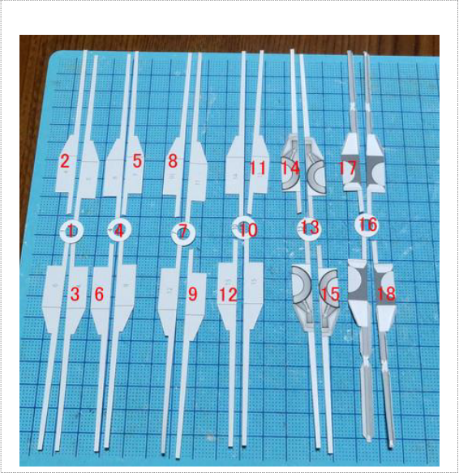
It is the wing front spar.Parts are
1-18.There are many parts because it is movable.
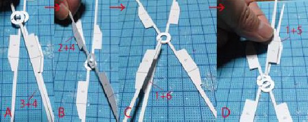
PAGE 1
A Paste 3 on the back of 4.B Paste 2 in the same way.Paste 6 to C
1.D Paste 5 in the same way.Work carefully
so that the glue does not otrude into the center ring.
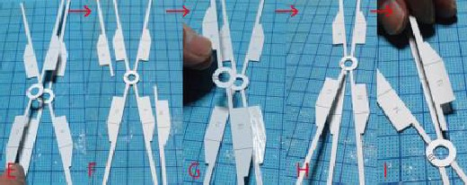
E: Put 4 on 1 and paste 7 on 5 and 6 ... Be careful not to stick the glue
into the center ring.F Paste 8 and 9 on it.G Paste 10 on 8 and
9.Paste 12 on D 4.E Paste 10 in the same
way.
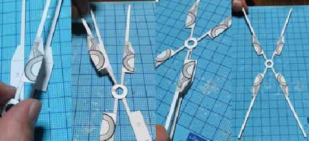
13 is pasted on 11 and 12 and 14
and 15 are pasted on 10 to make the front side of the girder.
PAGE 2
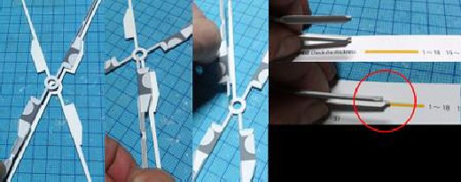
Turn it over and paste 16 on 2 and 3 and
17 and 18 on 1 to form the middle of the girder.Check the thickness with the "thickness
check"
drawn on the pattern.This
completes the wing front spar. Insert 61 axes into the center hole to check the movement.
rear spar
It is the last digit following the evious one.Assembly is the same as the evious girder.
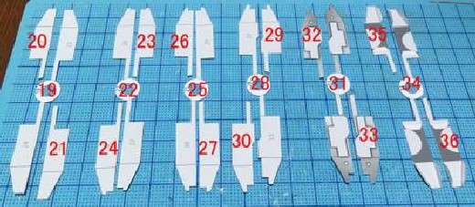
Parts are 19-36.
PAGE 3
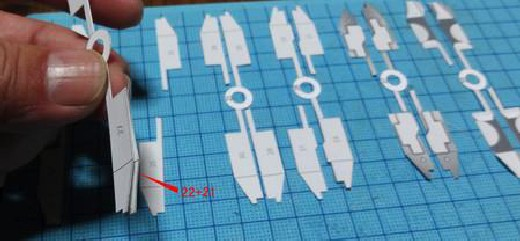
Paste 21 on 22.
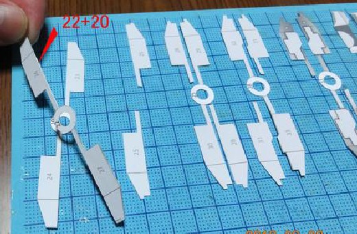
Paste 20 on 22 in the same way.Place on top of 19
(just put on without gluing).
PAGE 4
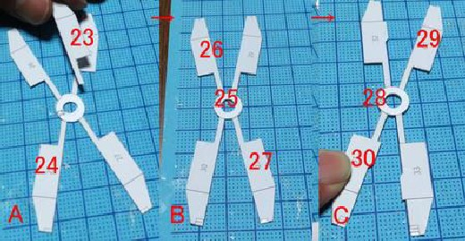
Paste in order as in the evious digit.Make
sure that the glue does not otrude into the central ring.
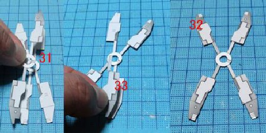
31, 32 and 33 are pasted and the front side is completed.
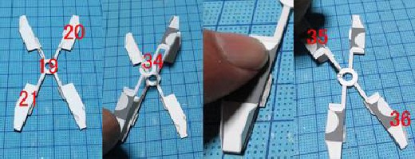
PAGE 5
Turn it over and paste 34 so as to straddle 20/21. Paste 35/36 to the part of 19 and it's done.
Insert the center shaft to check the movement.
wing rear spar 2-middle bone
Make the slanted part of the rear spar of the wing.
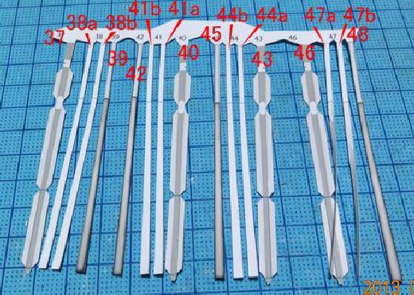
Make four sets of girders by sticking together four long and slender parts.
PAGE 6
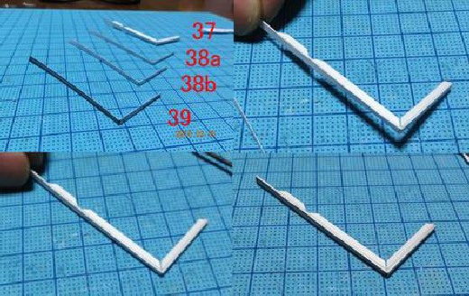
Upper right 37-39.The part is bent in
advance into an "L-shape", but the lower side of the mark on the part should be flat when
bent.Paste
38a 38b 39 on the back of 37.
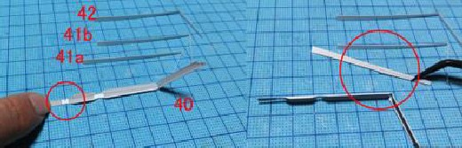
Similarly, attach the left upper side (upper left) 40-42 while paying
attention to the part indicated by the red circle.
PAGE 7
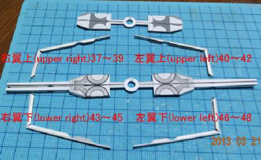
Lower right 43-45.The lower wing (lower
left) 46-48 is made and the rear girder is
completed.
==================================================
==================== Then make the
bone.
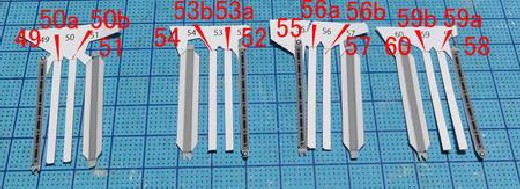
The middle bone is glued
together with 4 parts like the rear spar to make 4 sets of middle bones.
PAGE 8
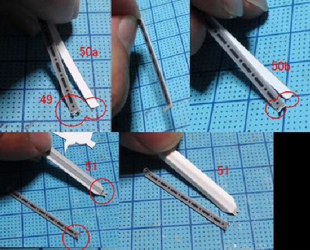
Upper right 49-51.Paste 50a 50b on the
back of 49 so that the
marks on the edges of the parts are aligned, and then paste 51 which has been turned
upside down.
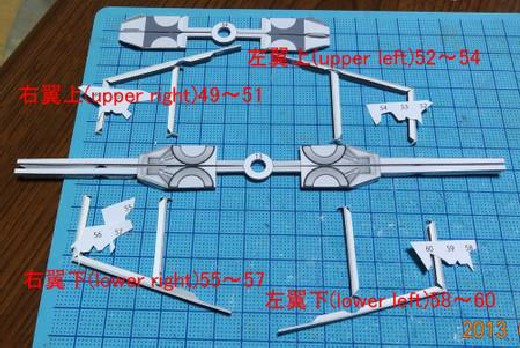
PAGE 9
Similarly, upper left 52-54, lower right 55-57.Glue the lower left
58-60.
49 By the way, 49, 52, 55 and 58 are on the body side.The round margin at
the tip comes to the back girder of the wing, so some margins like the red circle are not "T-shaped" but
"I-shaped".The bone is now complete.Up to here for this time
Wing axis-Girder and middle bone assembly
Assemble the wing shaft.
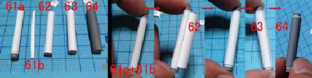
It's
easy, just stick 61a in a cylindrical shape with 61b and wind it around 62 63
64.
==================================================
==============================
Next, assemble
the joints of the front and rear digits that also serve as the frame for the engine mounting part You.
PAGE 10
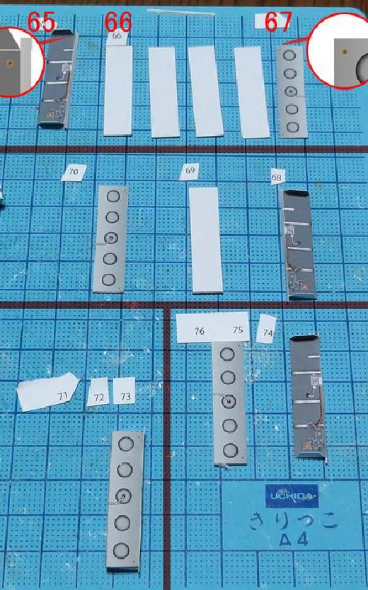
Attach 66 to 65 folded into upper right
L-shape, and finally attach
67.At this time, adjust the position indicated by the red circle on
PAGE 11
the front and back.Similarly, upper left 68-70, right lower 71-
73.Paste the lower left
74-76.
==================================================
==============================
We will
finally assemble the parts so far.
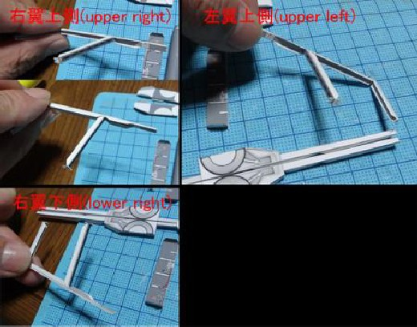
Connect the upper right rear spar and the middle bone.Attach it with
attention to the direction of the middle bone.Similarly, upper left side (upper left), lower right side (lower
right).Assemble the lower left side as well.
PAGE 12

Glue the upper spar and middle bone to the
upper spar.
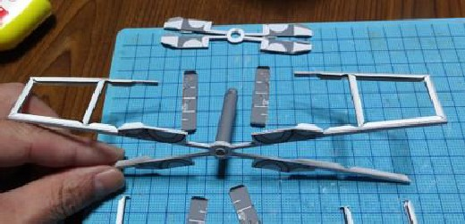
Similarly, glue the upper
left rear spar and middle bone to the front spar.At this time, it is good to work while inserting the wing shaft
into the center hole of the front spar and opening and closing the wing.
PAGE 13
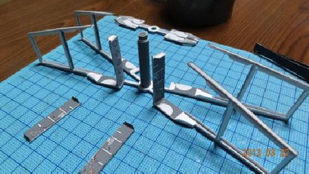
Similarly, lower right.Glue the rear spar
and middle bone to the lower spar to the front spar.Then paste the parts of the engine partition and front and rear
connection at the position of the
picture.
Glue the engine partition and front and rear connection, insert the rear
spar into the shaft and paste.
PAGE 14
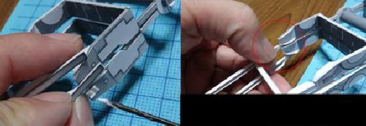
Glue and paste the connecting part of the
rear girder at an angle.
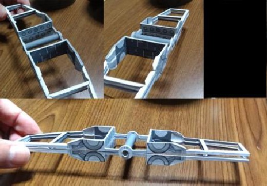
The wing skeleton is completed.
upper right
This is the assembly of the upper right.
PAGE 15
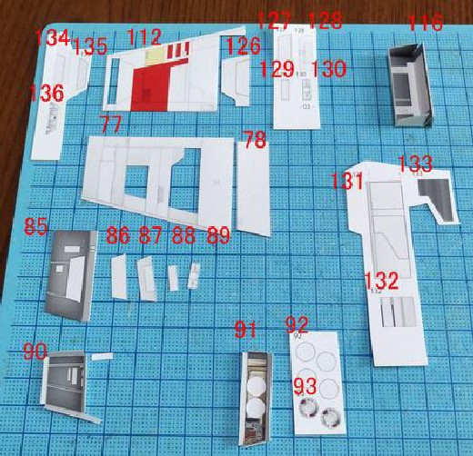
The parts are ...
PAGE 16
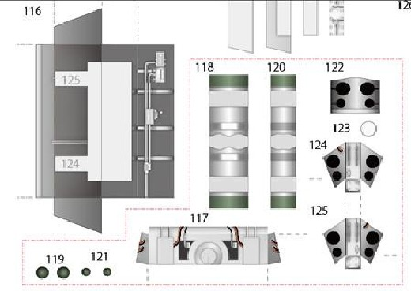
Since 91-93 and 117-125 are internal
parts, they are not necessary if you do not use cutting models.
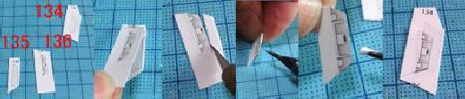
Paste 134 ~ 136.It is good to cut it operly as shown in the picture and
then glue it, then cut it operly touch up paste ...
PAGE 17
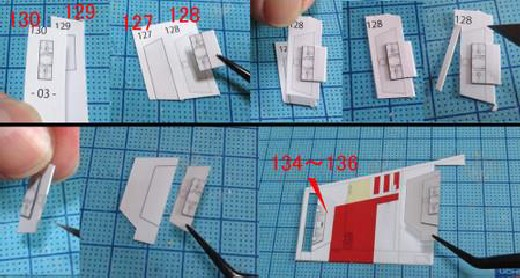
Similarly, attach 127-130 and attach to
112.
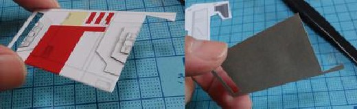
The surface of the blade is
completed.
PAGE 18
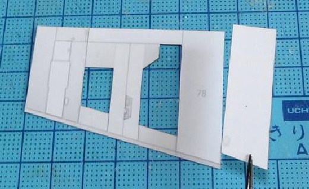
Attach 78 to 77 on the inside of the
blade.
PAGE 19

Inside the blade (1) Attach 86-89 to
85.
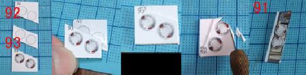
PAGE 20
Inside the blade (2) Attach 92 and 93 to 91. Omit if you can't see inside
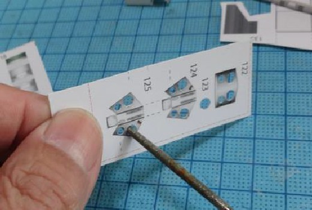
You can omit it from here as it is an internal part.The parts
of
122, 124 and 125 are not broken out by drilling holes as shown in the picture, cleaning them with a file and
removing them.
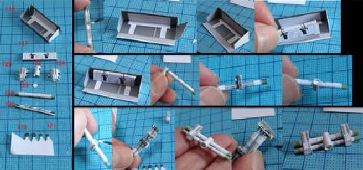
We assemble it
carefully, though it is fine.
PAGE 21
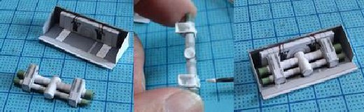
If the cylindrical parts are covered with
round parts, they are collected into 116 parts.
PAGE 22
131, 132 and 133 are necessary parts when "the interior is not made".
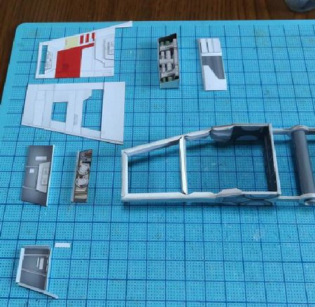
The parts are now ready.I will combine these
parts.
==================================================
================================== First of all
...
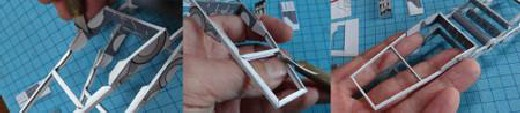
PAGE 23
" Glue allowance "is cut off from the upper right bone part with a cutter.(If you don't want to make
the inside, I think you can use the margin as it is ...)
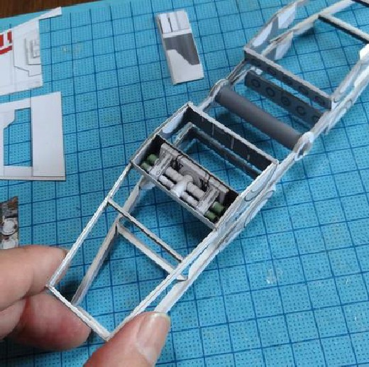
Incorporate the slanted part near the engine ( If you do not make the
inside here, you will cover with 131, 132, 133)
PAGE 24
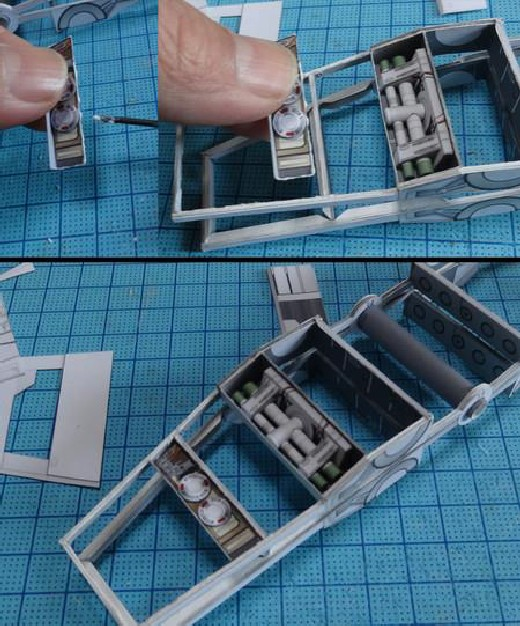
Paste the inside of the blade (2) at the
position shown in the photo.If you can not see the inside, you can omit it.
PAGE 25
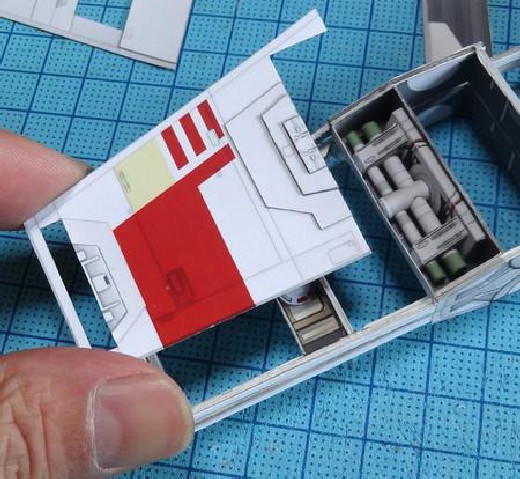
If you can't see the inside of the
wing, just stick the surface of the wing as it is.
PAGE 26
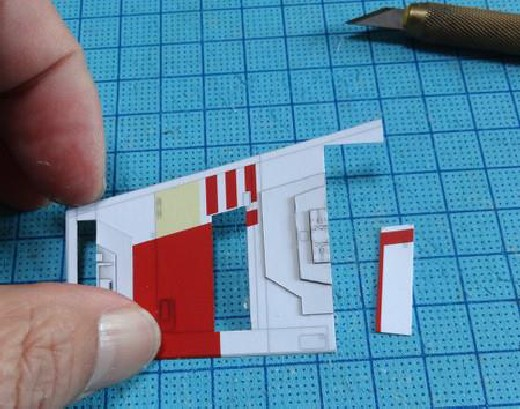
If you want to show the inside of the
feather, cut out the position of the picture.(The cutout position is not shown on the parts, so
please refer to
the picture)
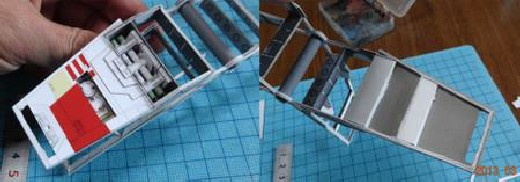
Attach the surface of the
blade (make sure to match the front of the blade with the girder).
PAGE 27
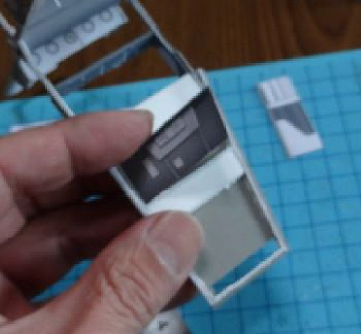
Paste the inside of the blade (1) at the
position shown in the photo with the blade on the back.(The picture is out of focus ...)
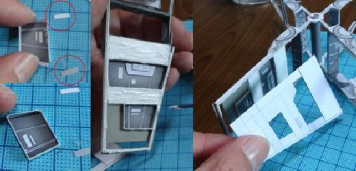
Paste the wings on the back side with 90 in a box shape.If the
inside (2) is installed, cut off the part marked with the
PAGE 28
photo .After attaching to the blade, paste the panel inside the blade.
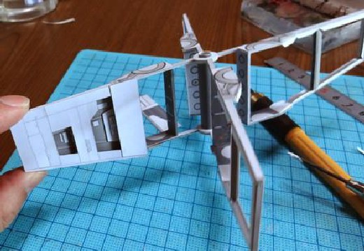
The rough assembly of the upper right has been completed.
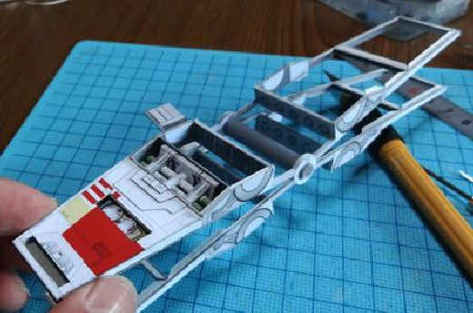
Today is this.Thank you for your hard work.
PAGE 29
upper leftt wing

Assembly of upper leftt wing.The blades on
this side do not have any internal parts (the trapezoidal part beside the engine and the upper
wing). It is a
little easier to assemble than the upper right wing.
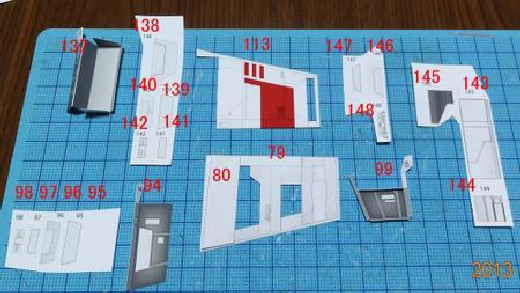
The parts are 79-80, 94-99, 113, 137-148.(I'm sorry that the number
jumps.) The bone glue has been cut off at this point.
PAGE 30
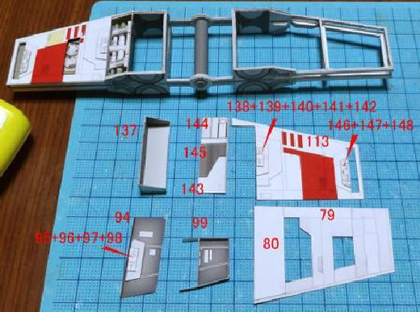
Paste 80 to 79.Paste what overlaps 95-99
on 94 and sticks.Paste 113 to 138 to 142 and 146 to 148.137 is assembled in a box shape.
PAGE 31
PAGE 32
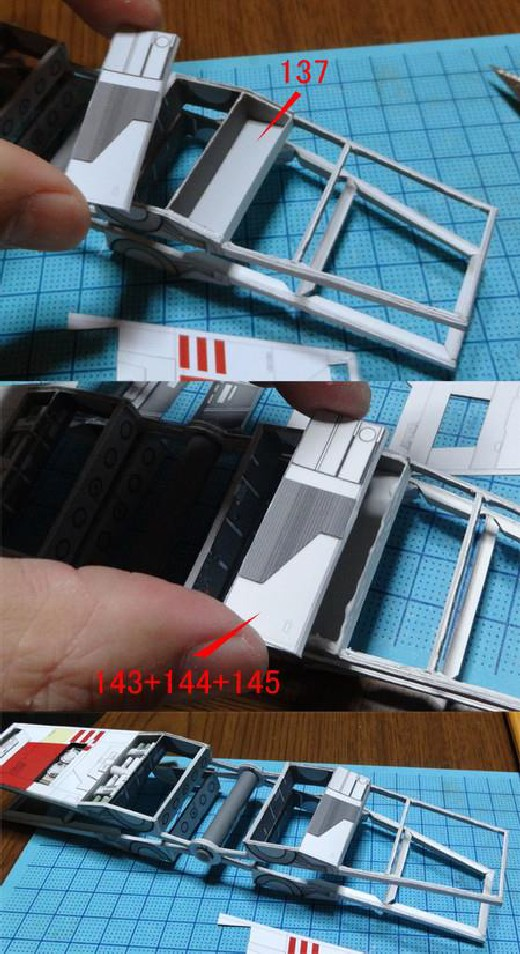
PAGE 33
Attach the engine frame and front and rear bones 137 to the wing frame and glue the upper part (143 + 144 +
145).
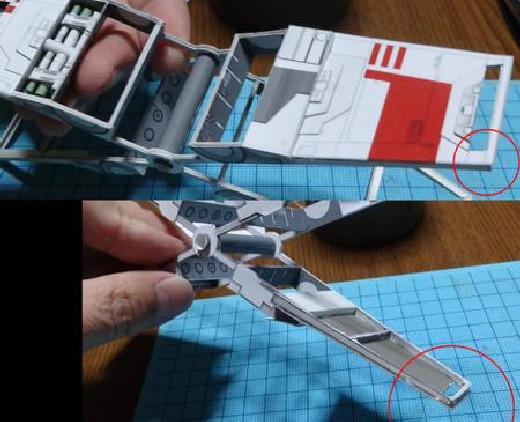
Paste the outside of the
blade.At this time, a few millimeters of the wing surface otrude from the wing tip and the rear side as shown by the
mark.
PAGE 34
Paste 94 and 99 on the back side of the
outer surface of the blade.Then paste the inside surface (79) of the wing.(This is also shaped like a few
millimeters on the wing tip and rear side, like the
outer surface.)
PAGE 35
You now have a rough shape for the upper
leftt wing.That's all for today ...
X-wing lower right side (lower right)-lower left side (lower left)
Create the lower right and lower left.
PAGE 36
The parts for lower right are 81-82, 100-105, 114, 149-160.83-84,
106-111, 115, 161-172 for the lower left
side (lower left) (I'm sorry because the numbers are skipped.) The bone glue was cut off at this
point.
Assemble into large
chunks.
I attached the engine frame
and front and rear bones 149 and 161.
PAGE 37
Attach 155 + 156 + 157 and 167 + 168 + 169
to cover.
Paste 114+ (158 + 159 + 160)
+ (150 + 151 + 152 + 153 + 154) and
115+ (162 + 163 + 164 + 165 + 166) + (170 + 171 + 172) on the wing front
side.As I mentioned last time, it feels a few millimeters otruding from the wing tip and the back of the wing.
PAGE 38
Paste the internal parts 100-104 and 105
for the lower right side and 106-110 and 111 for the lower left side (lower left) on the back
of the front side
of the wing.
81 Paste 81 + 82 for the
lower right side (lower right) and 83 + 84 for the lower left side (lower left).
PAGE 39
PAGE 40
The rough shape of the wings has been completed.
PAGE 41
From behind. To this day, the wing will be
fitted with fine details in the rear, the engine, and the beam cannon, but we will postpone it
later and reassemble the airframe bones the next
time.
X-wing wing modification Redesign of wing
Regarding the wings, we decided to recreate them by increasing the strength of the moving parts.
PAGE 42
PAGE 43
PAGE 44
The red part is the modified / added
part.Change the arm of the rotating part to a thick triangle with no wing spars and bone glue allowance.Add a flat
L-shaped bone connecting the front and rear girders.
X-wing wing reassembly (1)
This is a modified version of the wing assembly.
Part of the front girder ... The shape of the arm (gray part) of the
rotating shaft part has changed, and there is no glue.Since the numbers have not changed, the assembly method is the
same.
PAGE 45
I tried touching up the cut of the
internal reoduction part of the upper right side with a red color.
Put it in order and paste it upside down and paste the parts on the back
side ... eviously there was a margin here.
PAGE 46
Completion of the front girder ... I think
that the strength has imoved a little compared to the evious one.
Make sure the cuts you were worried about are red and red.
PAGE 47
Part numbers and assembling methods are
the same except that the rear spar and the middle bone are slightly different in shape.
PAGE 48
X-wing wing reassembly (2)
Reassembly of the wings-the second of the
major changes this time-is the joint between the engine frame and the front and rear girder.eviously it was an
"I" shape, but it has been changed to an
"L" shape.
PAGE 49
Parts are 65-67 for upper right.68-70 for
upper left.The lower right is 71-73.74-76 for lower left.
Assemble from the upper right.The parts that become "thick" (66a
and 66b) are roughly cut as shown in the picture and pasted together.
PAGE 50
Paste 66a on 65 and add thickness.Paste
67a on the back side, and
add thickness with 66b on the bottom side.Finally, the bottom side of the bottom is
blindfolded with 67b, and it is completed.
Similarly, 68-70 for upper left.Lower right 71-73.Make the lower left
74-76.
PAGE 51
Attach it to the base of the wing, between
the front and rear girders.
Make it
flat inside the wing (the part where the upper and lower wings close).
PAGE 52
Install the other three places in the same
way.
PAGE 53
It has become quite solid.Operation is
also smooth.That's it for the assembly of the parts
changed.
==================================================
===================
Next, attach the
inside accessory and the outer plate ... but the assembly from here is the same as the one you did before, so
it's omitted To do.
It looks like
this.
PAGE 54
Lower side.
Closed state.
X-wing body bone (2)
PAGE 55
Assemble the evious bone a
little.
Attach 175,176,177 to the center spine (173 + 174).Be careful that the glued position of the in-flight
parts is drawn in gray on the starboard side.Attach it so that 187,188 is inserted from right
and left there.In
addition, attach the cockpit floor 189 by inserting it from behind.
PAGE 56
Furthermore, 178 which is divided into
right and left is inserted from right and left.Insert 180 and 181 from the top and then insert
179. The upper
part of the part bends into an L shape and reaches the top of 180.
PAGE 57
Attach it so that the floor 190 <191 at
the rear of the cockpit is inserted from the left and right.186 can be worn after attaching the
wings, so leave
it as it is.
PAGE 58
The body bone is
completed.
PAGE 59
Here you will attach the wings and other internal parts and even the outer
shell.
==================================================
============================= At
this
point, leave the main body parts, and assemble the upper jumble parts.
Parts are 247-264.Some parts are selectable from pattern A red numbers
(248,250,252,253,254,256,258,260) and pattern B black numbers (248,250,252,253,254,256,258,260).In the example, it
is red 3, so it is assembled with the B pattern.
PAGE 60
Because the details are exessed by
lamination, they are laminated so that they are thick.(I think that it is better to roughly cut and
paste here
and then cut it out)
PAGE 61
Lamination Cutout Lamination Cutout
Layered while repeating.
PAGE 62
The jumble of the upper rear part of the
body is completed.
X-wing body bone (3)
I was worried about the order of assembly.... or internal outer
shell from the attached wings, internal or incorporate the wing from
assembling the outer shell ... quite difficult choice kana ...
a, to include the wing while measure the timing
from incorporating the internal to the framework after all.
However, at this stage, we decided to attach the
wing attachment frame to the body bone.(Because it seems that the inner and outer shells can be attached neatly ...)
That
is the wing mounting frame this time.
PAGE 63
Attach 183 (the lower part of the frame)
and 184 (the upper part of the frame) to part 182f (the front part of the frame).Add 185 on
184 (be careful
before and after). The rear frame part 182r is not glued yet.
Attach the completed "U" shaped wing frame to the body skeleton.
Glue on the body bone and insert it from behind so that the center line does not shift.(The gate part behind the
body bone is bent left and right)
PAGE 64
It looks like this.
Looking from the front like this.The cut edge of
the side bone is also painted red.
It
is not a oduction installation, but check the operation by inserting wings with a temporary assembly.The width of
the upper and lower wings is surisingly narrow, even if the wings of the X wing are fully opened.
PAGE 65
X-wing internal (1)
Let's work on the internal parts. Of
course, it can be omitted if the interior is not made.
Sensor part at the tip of the nose.Parts are 192 to 195.Assemble as shown
in the photo.I put the slit last.
Installation of 192.
Installation of 193 + 194 +
195.
==================================================
=========================
Next is the sensor
computer part behind it.
PAGE 66
Parts are 196,197,198,199.
PAGE 67
Fold each into a box and attach it to the
body.Attach 196 so that it otrudes to the port side from the cutout at the top of the bone.
PAGE 68
It looks like
this.
==================================================
==========================
Next is the
navigation computer before cockpit.
Parts are 200,201,202,203.Assemble them in three dimensions.
PAGE 69
Attach 200,201,202 to the specified
position respectively.
The 203 is
mounted so that it is pushed into the small bone between the cockpit and the navigation
computer.
==================================================
===========================
Next is the
cockpit.This part is not omitted even if there is no internal reesentation.(However, if the canopy is to be solid
black, the story is different ...)
PAGE 70
Parts are
204,205,206,207,208,209,210,211.
Assemble each as shown in the picture.Stick 210 on the back of 209.
PAGE 71
Paste the starboard wall 209 + 210, sheet
211 and port wall 208.For the main panel, paste 205 on 206 and paste on 204.
Photo of the main
panel.
================================================== ================== Next, assemble the box on the back
of the seat.
PAGE 72
Parts are 211a, 211b, 211c.After
assembling each into a box shape, paste the three together.
Paste it in place.
It looks like this.
PAGE 73
X-wing internal (2)

The second time inside the body ... the
second half.
First of all, we will make it from the outside of the wall.
Parts are 212-216.Just because it's small, it's
basically a stack of simple structures.
Paste the assembled parts in place.
PAGE 74
In this example, the main panel of the
cockpit was pasted at this
point.
==================================================
====================
Next, make a missile
launcher.
PAGE 75
Parts are 217-220. I compose it like a
photo (I forgot to take a photo in the middle
).
Like this The launcher part is not well captured I m
sorry.
==================================================
PAGE 76
=====================
Next is the part behind the cockpit.
Parts are 221-223. For 221a, only one side is covered with 221b, and the
other side is attached to six bones.
Like this
...
==================================================
=====================
Next is the droid
socket, power furnace and luggage compartment.
PAGE 77
Parts are 224 to 231.After installing the power furnace 224, install the droid socket 225.At the bottom, attach
226-228 to the back, and attach the red parts of 229 + 230 + 231 in
front.
==================================================
======================
Next is the internal
parts on the back of the body.
Parts
are from 232 to 246. I'm getting tired of taking pictures, but ...
PAGE 78
PAGE 79
PAGE 80
Attach it like this ...234 to 236 are pasted on the small bone 186 made earlier.
The interior of the body is now almost complete (only the
front leg storage section etc.).Thank you for your hard
work.
==================================================
==========================
By the way, when
I insert my wings a little ...
PAGE 81

X-wing back part
Assembling is at a rather slow pace, but we
make the back part. If you think that you made it because you are ogressing while
PAGE 82
assembling the assembly order, it feels
like it will not be busy ...
PAGE 83
Parts are 265-274.265, 267, 269, 271 are assembled by selecting from two types of patterns.Since the example is Red
3 (Red3), I will use the parts of the "B" group.
Do you understand this?Attach 266 to 265 to make a frame, and assemble 267
into a box and paste.Put 269 on 268, cut and paste, cut
271 on 270, paste, cut and paste on 266.
Paste
272,273,274, which has been folded and pasted between 266 and
267, from top to bottom.End
For X-wing engine upper right (1)
Go for the upper right side of the engine.
PAGE 84
The pattern paper is the upper half of the
sixth page.
PAGE 85
The upper part of the right wing (upper
right) makes the inside, so the red part is unnecessary.
Part 303 requires attention.Cut and use only the upper half as shown in the
picture.
PAGE 86
287The main body is 287.If you insert a
streak with a cutter that
does not cut the fold line, open three slits and turn it over, and if possible,
remove about half of the paper as shown in the picture to reduce the thickness of the lower overlapping
part.
Then, assembling First, the
engine front body parts 287-290.Bend the lower side of 287 into a semicircle as shown in the picture.Fold
the
288 margin and bend the whole round.
PAGE 87
287 is assembled as shown in the
picture.Attach 288 here.
Assemble like
this.
PAGE 88
289 is cut in two folds.
Paste so that 289 and 290 are inserted into the
slit part of 287.
PAGE 89
Fit the assembled part into the engine
frame of the wing (it is a temporary assembly that does not adhere).Will it fit
neatly?
==================================================
========================
Next, we will
make the front jet.
Parts are 291 ~
297.
PAGE 90
Align 291 to 287 and paste.Then paste 293
and 294 folded in half.Attach 295 to the lower half, aligning the tips, and attach
296.Finally, paste 291 and
295 in a circle.
Attach 292 to the cut
behind 293.
==================================================
==========================
Next, make
the inside of the upper part of the engine front.
PAGE 91
Parts are 298-302.First, connect 298-300
at each section.I think that the back side should be painted black.
I forgot to take a picture ... Attach each to the engine body
287.
==================================================
===========================
Next, attach the
297 to the front injection port.Since the front of the 297 sticks out slightly, it is painted in gray, and it is
pasted so that the circles on the photo are wound together.In the example,
303 is attached to the upper part
(it feels slightly behind 297).
PAGE 92
For X-wing engine upper right (2)
Continuation of the engine.I will make the second half.
Parts are 305-322.
PAGE 93
Attach 314 to tubular 315 and attach to
engine body.
Assemble 310 into a tube
and 311 into a cone.Stick 308 on 309 and add thickness.Fold 313 in two and glue them together.Bend the other parts
as shown in the photo and give them a touch-up.
3 Attach 311 to 310 and paste to 313.Paste the 306 inside the 305 (note the
front and back) and attach the black 307 inside to the tip.Paste these two together as shown in the picture.Paste
312 around
313.Assemble in a cone.Attach 309 + 308 to the lower
side.
==================================================
======================
Next is the rear of
the engine.
PAGE 94
Adhere 320 and 321 in the form of a
cylinder at the cut end.Cover the cylindrical 318 with 319.Attach the cylindrical 321 to the
cylindrical 320
and wind the 322.Glue by essing 318 + 319 into 320 +
321.
After pasting the front and back, paste it on the first made 313 (305 +
306).
==================================================
=======================
Finally, I will
attach the engine to the blades.
Parts
are 451,452,453.
PAGE 95
No. 452 is attached by inserting it into
the groove behind the wing.
No. 451 ad
is attached to the base of the wing.The 453 is assembled in a box shape and attached to the groove at the tip of the
wing.
PAGE 96
It looks like
this.
==================================================
======================= Install the
engine.
Attach it carefully while
rubbing.
PAGE 97
Attach 397 to the engine
tip.
==================================================
====================
This completes the right
upper engine (with internal reesentation).
PAGE 98
Somehow inside of the engine was done
safely.
PAGE 99

It looks like this when attached to the fuselage.
X-wing engine for upper left (2)
I will make the second half of the upper left engine.
First is the front part of the second half.(It's
complicated)
This is also made without
internal structure.Parts are
344,348,349,352,363.(When making the inside, please use
338-342,345-
347,350-351,353-357 and assemble it referring to the article on the upper right wing engine.)
PAGE 100
This is also made without internal
structure.The parts are glued together in a tubular shape of 344 (laminated at the cut end).Wrap
352 there and
paste 348 thickened with 349 at the bottom.Finally,
attach the 344 attached to the cone at the tip (do not
mistake the direction ...).
The front
part of the second half is
completed.
==================================================
=======================
Next, we will
make the last jet.
Parts are
358-362.Round each into a cylinder.Attach 359 to the end of 358 to cover.
PAGE 101
Attach 361 to the round 360 in a cylinder and wrap it around 362.
Glue the tip of 358 + 359 into the cylinder of 360 + 361 + 362 and push it
into the cylinder.With this, the last injection port is
completed.
==================================================
======================
I will attach
the front and back and attach it to the front of the engine.
Join the front part and the back part.Make sure that the joining lines of
each part coincide at the bottom.
PAGE 102
Glue the hole behind the first half of the
engine and the 348 + 349 in the second half made this time and glue them together (348 + 349 will otrude backward by
about one third).Finally, in the red frame,
don't forget to attach the 364 to the tip of the
engine.
The left wing upper engine has
been completed.
PAGE 103
PAGE 104
PAGE 105
Kit cut is shown in the red circle.
X-wing engine for under (1)
Now that we have the upper wing engine, we will build the lower engine.However, since the lower engine is also a
storage location for
the legs, the assembly is slightly different.
First, from the front body, the parts for the right wing are 364-368, and
those for the left wing are 407-411.In addition to the slits,
PAGE 106
make holes for the legs.Insert the parts of the divider into the semicircle (note the front and back of the
divider).
The assembly here is the
same as the one made before.The up and down direction of the engine is upside down with the engine above, but it is
the same that the brown semicircle (369,412) with a partition arrives on the flat side opposite to the kamaboko
type, gluing so that the tips are aligned .
Attach the parts (370,413) behind the
semicircle.
==================================================
PAGE 107
=========================
Next is the internal structure part.
For 376, leave the mounting holes on the legs.Attach 377 to the front cut
of 376 and insert it into the engine bone from the front.Same for the left side (419,420).
Attach it by winding 375 (the tip otrudes slightly
like the engine above).Assemble the other side (418) in the same
way.
==================================================
==========================
Attach the next
engine to the frame.
PAGE 108
Attach it to the engine frame like this.
PAGE 109
The engine has arrived on the
wing.
==================================================
===========================
Next, make the
engine cover.Here, unlike the engine above, it opens and closes to store the legs.
PAGE 110
The right side is 378-384, and the left
side is 421-428.
Assemble as shown in
the photo.Be careful not to be fooled by the layout of the pattern for the door parts ... Paste 385 on the back
of
382.384 is pasted on the back of 383.Be careful before and after.Attach 380 to the front edge on the back
side of 379 and 381 to the back side edge ... here it may be possible to simply paint the back with a suitable gray.
PAGE 111
Under the right wing of the engine: Paste
378 on the tip and paste the left and right doors together with the shape behind.Finally,
paste the semicircle
379 behind.Attach the left wing in the same way.
The first half of the lower engine including the leg door has been
completed.
PAGE 112
X-wing engine for under (2)

It is a continuation of the engine lower
side.Assemble the second half.
Parts
are 387-397 for right and 431-441 for left.
The assembly method is the same as the latter half of the engine of the
upper left wing Please refer to here.Finally, remember to attach
397 and 441 to the front of the engine ...
PAGE 113
Assemble the left and right parts and attach them to the first half of the
engine.(By the way, it takes about 40 to 50 minutes to
work more than uhu02)
PAGE 114
With the above, four engines are completed.Thank you for your hard work.
X-wing landing gear (rear)
PAGE 115
Now that the lower engine is ready, make the rear landing gear that plugs in here.
The parts for the right are 398-406 for the right and 442-450
for the left, but they may be the opposite because they are the same.
For the time being, from the right part ... 398 is rolled into a tube
(stick) and glued, and 399 is glued to it with the back cut aligned.
PAGE 116
Check the condition by inserting it into
the hole of the engine
(not glued).
400Add 400 to 398 + 399, aligning the joining line at the back of the
picture.Laminate 401 and 402 on the front and back.
PAGE 117
For 404, fold the lower end to make it
valley-folded, then fold and paste it in the center and cut out.Insert this into the 403 so that the front and rear
are not mistaken, and glue it at the slit.Next, glue the expanded part of the tip of 404 and the cut of 403 and
paste
it on 401 + 402.
The
support frame 405 at the base of the foot is painted black on the back, then folded and attached as shown in the
photo.
PAGE 118
After attaching each part as shown in the
photo (center), insert it into the hole of the engine part.Since this is a detachable type, it is not glued in the
example, but I think that the glue is ants as
well (if you do not want to wobble or want more
strength).
Similarly, make the left
side and insert it.
PAGE 119
The
landing gear after is completed.It's a small leg for four big engines .
X-wing landing gear (front)
I will make the landing gear of the front (nose).
PAGE 120
Parts are legs 590-598 and storage part
279.
Make a tube (stick) with 590 and
paste 591 and 592 around it.Then paste 593 and 594 around the other side.Assemble them so that the finished line
looks like Fig. by matching the joining lines behind.
PAGE 121
Insert the bottom side of the bar into the
hole of 596 and glue it
(be careful before and after).Glue 597a and 957b on the front and back, glue them, fold
598 in half, paste and cut out diagonally.
Install 595 as shown in the picture.When viewed from above, the long arm in
front looks like short tabs on the left and right.
For storage box 279, peel off a little paper from the back side of the door
part, and then glue it together.Assemble the whole into a box.
PAGE 122
Glue the back of the storage box 279 and
attach it to the bone of the body.Laminate so that the center does not shift.
I inserted the front legs into the storage (I don't glue
it because it's detachable ... I think the glue is ants if you like.)
==================
=========================== With the
above, the front and rear leg landing gear was completed.Let's combine
the wings and body to see how the front and rear legs touch.
PAGE 123
I'm sorry ... rice bowl ...
PAGE 124
It is landing firmly.
From above.
PAGE 125
Incorporation of X-wing wing-rear outer wall
We will incorporate the wings into the body and attach the rear outer wall.
Flip up the gate at the rear of the body and insert the wing.
PAGE 126
Attach the part 182r on the back side of
the wing shaft bone and glue the left and right gates together and close.After that, attach
the horizontal bone
186 (with 243-246 attached) that was made before by inserting it from above.
Wings have been incorporated into the
body.
==================================================
======================
Next, incorporate the
jumble part on the rear upper part.
PAGE 127
Attach the port side so that it matches
the cut of the droid socket part.
Attach the glue allowance 247b, 247c, 247d for attaching the body outer
wall.The body is now
ready.
==================================================
===================
Next, we will adjust
the rear outer wall.
The outer wall is
275, but cut it as shown in the photo right to use it to show the inside. I think it is good to cut up and down with
the wing part).
PAGE 128

Attach the gochamecha at the rear.Attach
the 286a to the 286a and push it into the back of the body 275 from inside.
Next, glue the cut edge of the rear gochamecha (265 + ) made earlier and
paste it from the inside of the
rear.
==================================================
========================
I will install the
adjusted outer wall.
Because it is
installed from the upper port side, the space between the wing and the fuselage should be widened and glued with a
paper spatula.
PAGE 129
The rear port side was attached while
paying attention to the alignment.(It looks like it is wearing in the picture, but the gochamecha part at the rear
has not been glued
yet.)
==========================
=================================================
next It is on the
lower side.
The legs were removed and
worked so as not to hurt.First, paste half from the lower center line.
PAGE 130
Glue the other
half.
==================================================
===========================
Install the
upper side on the starboard side.
It
is a bit difficult to understand, but stick it back and forth.
PAGE 131
Attach the parts behind the
cockpit.
Finally, glue the cut edge of the rear gocha-mechanical part
and knock it down, and paste it on the body side.
X-wing front outer wall-canopy
I will attach the outer wall as before.First of all, from the upper front of the body
PAGE 132
The 276 parts show the inside, so cut off
the starboard side as shown in the photo.
Before attaching 276 parts, attach the left and right diagonal parts (284
on port and 285 on starboard).The tip should match the body bone as shown in the photo red circle.
PAGE 133
Paste 276 parts from
above.
==================================================
======================
Next, install the
lower outer wall.
For 277, the door
part of the storage of the leg was cut out. (If you do not need storage, such as creating a flight form, omit it,
you can just assemble without cutting out)Paste 278 rounded from the back
into a semicircle.
PAGE 134
Attach while gluing the body bones and
pulling out the leg storage door from the
hole.
==================================================
======================
Next, make a nose
cone at the tip of the nose.
The parts
are 280,281,282.280 shows the inside, so I cut off a part like a picture.Although it is a small part, glue it to the
cut and carefully combine it to form a shape.
PAGE 135
Glue the inside of the cone by applying glue and pushing in from the
tip.The outer wall of the body has arrived.
PAGE 136
It looks like this.
Grounding condition.
PAGE 137
Port side.
Backward.
PAGE 138
Wings
open.
==================================================
=====================
Next we will make a
canopy.
Take a picture before
installing the canopy.
PAGE 139
Parts are 284 and 285.Cut out the
window.In addition, the 285 was separated before and after.Then
make thewindow with transparenciesand stick it
to 284 (it seems to
arrive normally with a woodworking bond).Finally, paste285 while adjusting the shape from
the inside.
Glue the cut end on the
back of the completed canopy and paste it on the body.This completes the installation of the canopy.
PAGE 140
Canopy jumping state.
Closed state.
PAGE 141
Open state. That s it for this time.
X-wing laser gun on upper right
Assembling the upper right laser cannon.
Reoduce the interior unlike the other three gates.
PAGE 142
The parts are 455 to 492, but 484 is not used when exessing the interior.
Wrap 457 459 465 467 around 455 rounded into a bar (457 and 459
are
wrapped at the same position, but for the rest, they are slightly shifted backwards as shown in the picture).The
back side is also
wound around 456 in the order of 458 460 466 468 (only the 466 sticks out slightly
behind).Designed with 0.22mm paper thickness.I think that it can be wound almost without gaps if it is wound tightly
with 0.22mm thickness.Cut edge when winding (The joint is made to match at the bottom of the beam.)
Assemble to connect the front and back with 469.
PAGE 143
470Wrap 470 around the same position as
469 and paste.
Paste the 471 folded in
a bellows shape so that it is wound.Then attach 472 so that it wraps around the tip of 471.
PAGE 144
Paste the 473-483 around the back.
The main body of the beam is completed.Up to this point, it is the same
with or without internal
exession.
==================================================
============================== In
the
example, the interior is made on this upper right.(If you do not make the inside, wrap it around
484)
PAGE 145
486 Attach the 486 after pasting it in the position of the photo so that it winds up from 486 to 487.The upper half
will be open.
488 Attach 490 with the
inside painted black after pasting so that it is wound around 488 and 489 at the position of the photo.(If you do
not create an interior, wrap it around
484)
====================================
===========================================
then the tip
portion of the beam It is an accessory on the side of the main body, attached to the wing.
PAGE 146
The semicircular parts at the tip are 463 and 464.Tips are necessary because they are small. First, make a 464 fold
line, make a hole a little smaller, then cut out and fold the fold line.(2) When glue is applied to the back side of
464, layer 463 on it and make a curve
with a thin iron bar.Glue the edges and stick them so that the left and
right semicircular parts are raised. When it's dry, trim the hole with a file.
Paste 462 at the position of the picture at the tip and paste
461 so that it is wound there.Then, insert the semi-circular part as before.Paste 491 on the side of the
body.
The base of the beam cannon is
492.Paint the inside black and assemble it into a box shape and push it into the hole at the end of the wing and
attach it.
PAGE 147
Glue is applied to the convex part of the
pedestal of the beam gun and the beam gun is put on it, and today's work is
over.
==================================================
============================== For the
time
being, we have an upper right laser cannon.
It looks like this.
PAGE 148
After all, X-wing looks cool when a laser
cannon arrives.
X-wing laser gun on upper leftt
Make a laser cannon on the upper leftt.
PAGE 149
Part numbers are 491-522.
PAGE 150
I'm going to roll the parts again to make a stick, but it's
difficult to roll them neatly.Yes, the
parts are placed vertically so that they can be rounded up brilliantly. But lick the back and squeeze them with a
thin stick. Roll the joints between fingers or
on a table. Various sticks are used.
The recipe is almost the same as on the right wing.Paste in
order.
After connecting the front and
rear parts with 507, paste 508 and attach fine parts.
PAGE 151
Because it doesn't make the inside,
wrap 522c around the back and paste 522a with the extra margin with 522b to complete the body.
Attach accessory parts.
492 Attach 492 to the hole at the wing tip and put
the beam on it.This completes the upper left laser
cannon.
==================================================
=============================
PAGE 152
It's been a long time.
Completed with X-wing lower cannon and droid
PAGE 153
Create two upper leftt laser cannons and a droid to complete X- wing.First, the laser cannon
Parts for lower right wing (lower right) are
523-553, and those for lower left wing (lower left) are 554-585.
The assembly method is the same as the evious upper leftt laser cannon. But
beware of one point !!
PAGE 154
If you align all the joint lines like the upper wing leather method, the joint line will come to a ominent position
of the barrel when completed.So paste 551a (583a) at the position rotated 180 as shown in the
picture.
Attach accessories.
PAGE 155
Attach to the wing.
It will be completed
soon.
==================================================
======================= Finally, make a droid
(R2D2).
PAGE 156
Parts are 599-611.We epared two patterns,
but in the example we will assemble the blue one.
Make the body 602 cylindrical and cover with 603.The legs are glued
together with paper to add thickness.Attach 605 by folding it to the bottom part 604 of the body.
After attaching the head (599 + 600 + 601) and the
bottom part to the body, attach the legs on the left and right and it is completed.
PAGE 157
It is small.
I will line it up with X-wing.
PAGE 158
Rub the socket on the X-wing body with a
round bar and mount the droid after adjustment.The legs are slightly viewed, so bend them
slightly inward and
then just plug in.
It fits like this.
Thus, X-wing is completed.Thank you for your hard work.
PAGE 159
PAGE 160
PAGE 161